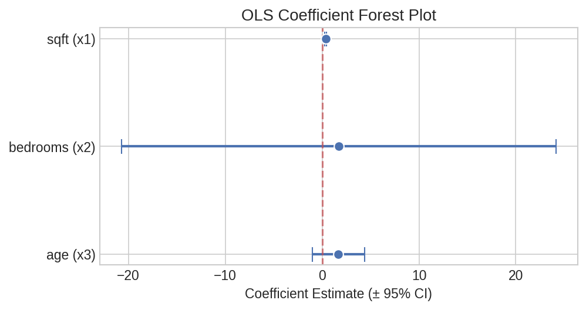
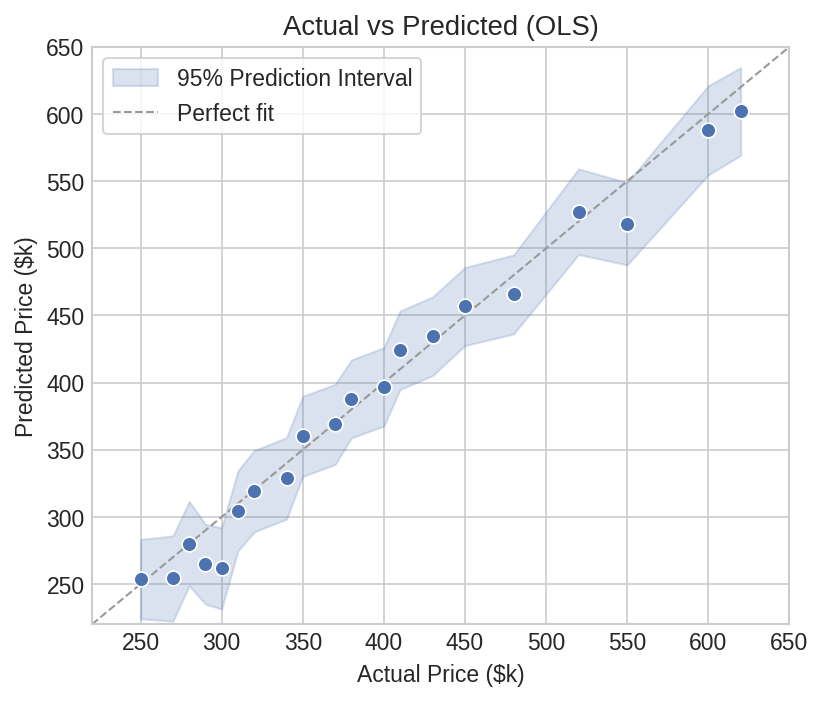
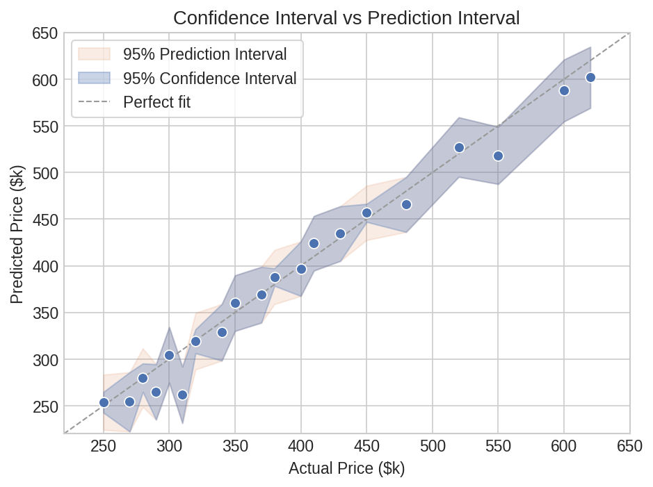
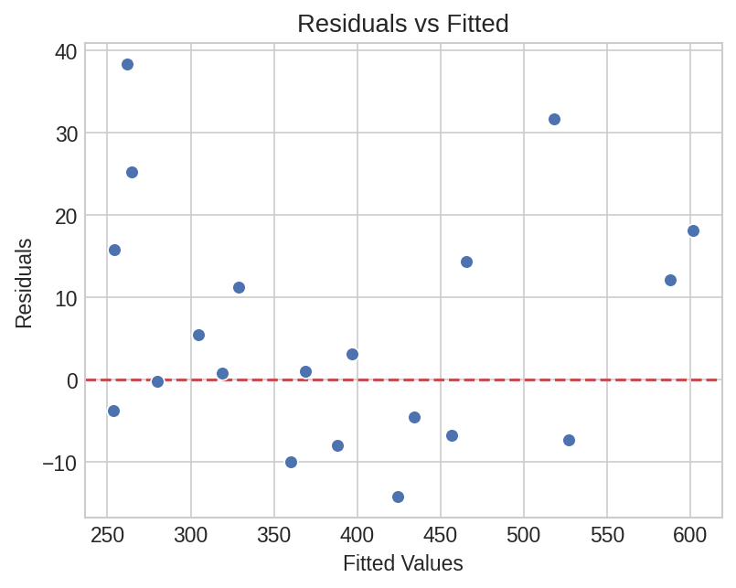
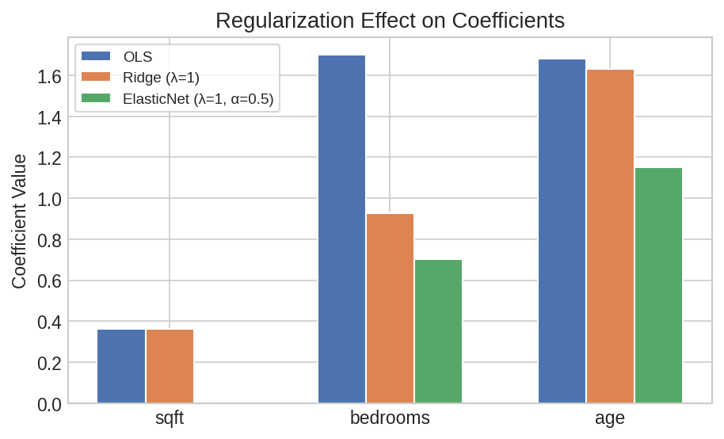
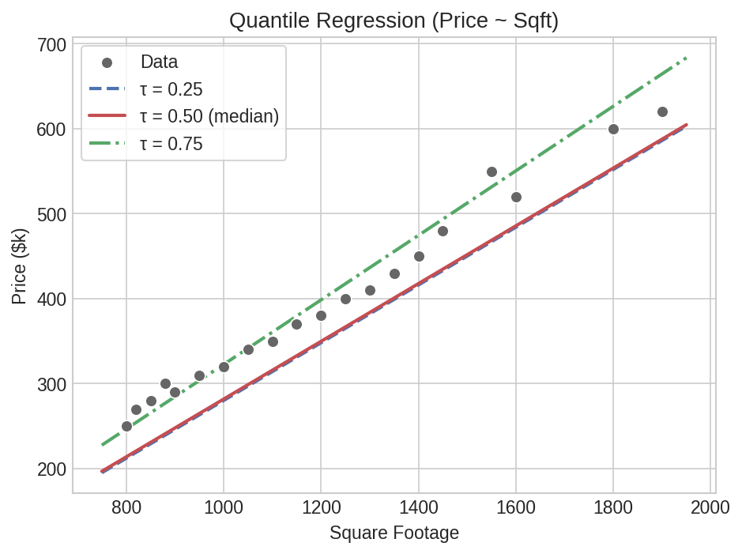

Regression Workflow¶
A complete regression analysis: fit a model, inspect coefficients, generate predictions with intervals, and run diagnostics — all in Polars.
Setup¶
import polars as pl
import polars_statistics as ps
# Apartment pricing data
df = pl.DataFrame({
"price": [250, 320, 280, 450, 380, 520, 290, 410, 350, 600,
270, 340, 310, 480, 400, 550, 300, 430, 370, 620],
"sqft": [800, 1000, 850, 1400, 1200, 1600, 900, 1300, 1100, 1800,
820, 1050, 950, 1450, 1250, 1550, 880, 1350, 1150, 1900],
"bedrooms": [1, 2, 1, 3, 2, 3, 1, 2, 2, 4,
1, 2, 2, 3, 2, 3, 1, 3, 2, 4],
"age": [15, 10, 20, 5, 8, 3, 18, 6, 12, 2,
16, 9, 14, 4, 7, 3, 19, 5, 11, 1],
})
Step 1: Fit a Model¶
result = df.select(
ps.ols("price", "sqft", "bedrooms", "age").alias("model")
)
model = result["model"][0]
print(f"R²: {model['r_squared']:.4f}")
print(f"Adj R²: {model['adj_r_squared']:.4f}")
print(f"RMSE: {model['rmse']:.2f}")
print(f"AIC: {model['aic']:.2f}")
print(f"F-stat: {model['f_statistic']:.2f} (p={model['f_pvalue']:.6f})")
print(f"Intercept: {model['intercept']:.4f}")
print(f"Coefficients: {model['coefficients']}")
Expected output:
R²: 0.9885
Adj R²: 0.9863
RMSE: 12.95
AIC: 167.20
F-stat: 457.22 (p=0.000000)
Intercept: -61.7424
Coefficients: [0.3607, 1.7018, 1.6806]
Step 2: Tidy Coefficient Table¶
Get a publication-ready coefficient summary with standard errors and p-values:
coef_table = (
df.select(
ps.ols_summary("price", "sqft", "bedrooms", "age").alias("coef")
)
.explode("coef")
.unnest("coef")
)
print(coef_table)
# ┌───────────┬───────────┬───────────┬───────────┬───────────┐
# │ term ┆ estimate ┆ std_error ┆ statistic ┆ p_value │
# ╞═══════════╪═══════════╪═══════════╪═══════════╪═══════════╡
# │ intercept ┆ -61.7424 ┆ 39.8851 ┆ -1.5480 ┆ 0.141171 │
# │ x1 ┆ 0.3607 ┆ 0.0332 ┆ 10.8486 ┆ 0.000000 │
# │ x2 ┆ 1.7018 ┆ 11.4411 ┆ 0.1487 ┆ 0.883615 │
# │ x3 ┆ 1.6806 ┆ 1.3684 ┆ 1.2281 ┆ 0.237166 │
# └───────────┴───────────┴───────────┴───────────┴───────────┘

Plot code
import matplotlib.pyplot as plt
import numpy as np
terms = coef_table["term"].to_list()[1:] # skip intercept
est = coef_table["estimate"].to_list()[1:]
se = coef_table["std_error"].to_list()[1:]
ci_lo = [e - 1.96 * s for e, s in zip(est, se)]
ci_hi = [e + 1.96 * s for e, s in zip(est, se)]
fig, ax = plt.subplots(figsize=(7, 3.5))
y = np.arange(len(terms))
ax.errorbar(est, y, xerr=[[e - lo for e, lo in zip(est, ci_lo)],
[hi - e for e, hi in zip(est, ci_hi)]],
fmt="o", color="#4C72B0", ms=8, capsize=6, lw=2)
ax.axvline(0, color="#C44E52", ls="--", lw=1.5, alpha=0.7)
ax.set_yticks(y)
ax.set_yticklabels(terms)
ax.set_xlabel("Coefficient Estimate (± 95% CI)")
ax.invert_yaxis()
plt.tight_layout()
plt.savefig("reg_coef_forest.png", dpi=150)
Robust Standard Errors¶
Use heteroskedasticity-consistent (HC) standard errors when variance isn't constant:
robust_coefs = (
df.select(
ps.ols_summary("price", "sqft", "bedrooms", "age", hc_type="hc3").alias("coef")
)
.explode("coef")
.unnest("coef")
)
# hc_type options: "hc0", "hc1", "hc2", "hc3"
Step 3: Predictions with Intervals¶
Generate predictions for every row, with 95% prediction intervals:
predictions = (
df.with_columns(
ps.ols_predict("price", "sqft", "bedrooms", "age",
interval="prediction", level=0.95).alias("pred")
)
.unnest("pred")
)
print(predictions.select("price", "ols_prediction", "ols_lower", "ols_upper").head(5))
# ┌───────┬────────────────┬───────────┬───────────┐
# │ price ┆ ols_prediction ┆ ols_lower ┆ ols_upper │
# ╞═══════╪════════════════╪═══════════╪═══════════╡
# │ 250.0 ┆ 253.70 ┆ 224.10 ┆ 283.29 │
# │ 320.0 ┆ 319.13 ┆ 288.82 ┆ 349.43 │
# │ 280.0 ┆ 280.13 ┆ 248.74 ┆ 311.52 │
# │ 450.0 ┆ 456.69 ┆ 427.59 ┆ 485.79 │
# │ 380.0 ┆ 387.90 ┆ 358.88 ┆ 416.92 │
# └───────┴────────────────┴───────────┴───────────┘

Plot code
import matplotlib.pyplot as plt
fig, ax = plt.subplots(figsize=(6, 5))
ax.scatter(predictions["price"], predictions["ols_prediction"],
s=50, color="#4C72B0", edgecolor="white")
lim = [220, 650]
ax.plot(lim, lim, ls="--", color="#999", lw=1, label="Perfect fit")
ax.fill_between(
predictions.sort("price")["price"],
predictions.sort("price")["ols_lower"],
predictions.sort("price")["ols_upper"],
alpha=0.2, color="#4C72B0", label="95% PI")
ax.set_xlabel("Actual Price ($k)")
ax.set_ylabel("Predicted Price ($k)")
ax.legend()
plt.tight_layout()
plt.savefig("reg_actual_vs_pred.png", dpi=150)
Confidence intervals (for the mean response) are narrower than prediction intervals:
ci = (
df.with_columns(
ps.ols_predict("price", "sqft", "bedrooms", "age",
interval="confidence", level=0.95).alias("pred")
)
.unnest("pred")
)

Plot code
import matplotlib.pyplot as plt
fig, ax = plt.subplots(figsize=(7, 5))
sorted_df = predictions.sort("price")
ci_sorted = ci.sort("price")
ax.fill_between(sorted_df["price"], sorted_df["ols_lower"], sorted_df["ols_upper"],
alpha=0.15, color="#DD8452", label="95% Prediction Interval")
ax.fill_between(ci_sorted["price"], ci_sorted["ols_lower"], ci_sorted["ols_upper"],
alpha=0.3, color="#4C72B0", label="95% Confidence Interval")
ax.scatter(predictions["price"], predictions["ols_prediction"],
s=50, color="#4C72B0", edgecolor="white")
lim = [220, 650]
ax.plot(lim, lim, ls="--", color="#999", lw=1, label="Perfect fit")
ax.set_xlabel("Actual Price ($k)")
ax.set_ylabel("Predicted Price ($k)")
ax.set_title("CI (narrow) vs PI (wide)")
ax.legend()
plt.tight_layout()
plt.savefig("reg_ci_vs_pi.png", dpi=150)
Step 4: Diagnostics¶
Multicollinearity Check¶
cond = df.select(
ps.condition_number("sqft", "bedrooms", "age").alias("cond")
)
c = cond["cond"][0]
print(f"Condition number: {c['condition_number']:.1f}")
print(f"Severity: {c['severity']}")
# "WellConditioned" (< 30), "Moderate" (30-100),
# "Serious" (100-1000), "Severe" (> 1000)
Expected output:

Plot code
import matplotlib.pyplot as plt
residuals = predictions["price"] - predictions["ols_prediction"]
fig, ax = plt.subplots(figsize=(6, 4.5))
ax.scatter(predictions["ols_prediction"], residuals,
s=50, color="#4C72B0", edgecolor="white")
ax.axhline(0, color="#C44E52", ls="--", lw=1.5)
ax.set_xlabel("Fitted Values")
ax.set_ylabel("Residuals")
plt.tight_layout()
plt.savefig("reg_residuals.png", dpi=150)
Regularization When Needed¶
If multicollinearity is a concern, compare OLS with regularized models:
comparison = df.select(
ps.ols("price", "sqft", "bedrooms", "age").alias("ols"),
ps.ridge("price", "sqft", "bedrooms", "age", lambda_=1.0).alias("ridge"),
ps.elastic_net("price", "sqft", "bedrooms", "age",
lambda_=1.0, alpha=0.5).alias("enet"),
)
for name in ["ols", "ridge", "enet"]:
m = comparison[name][0]
print(f"{name:12s} R²={m['r_squared']:.4f} RMSE={m['rmse']:.2f} "
f"coefficients={m['coefficients']}")
Expected output:
ols R²=0.9885 RMSE=12.95 coefficients=[0.3607, 1.7018, 1.6806]
ridge R²=0.9885 RMSE=12.95 coefficients=[0.3620, 0.9253, 1.6313]
enet R²=0.0000 RMSE=122.92 coefficients=[0.0, 0.7043, 1.1512]

Plot code
import matplotlib.pyplot as plt
import numpy as np
terms = ["sqft", "bedrooms", "age"]
ols_c = [comparison["ols"][0]["coefficients"][i] for i in range(3)]
ridge_c = [comparison["ridge"][0]["coefficients"][i] for i in range(3)]
enet_c = [comparison["enet"][0]["coefficients"][i] for i in range(3)]
x = np.arange(len(terms))
w = 0.22
fig, ax = plt.subplots(figsize=(7, 4))
ax.bar(x - w, ols_c, w, label="OLS", color="#4C72B0")
ax.bar(x, ridge_c, w, label="Ridge", color="#DD8452")
ax.bar(x + w, enet_c, w, label="ElasticNet", color="#55A868")
ax.set_xticks(x)
ax.set_xticklabels(terms)
ax.set_ylabel("Coefficient Value")
ax.legend()
plt.tight_layout()
plt.savefig("reg_regularization_coefs.png", dpi=150)
Formula Syntax¶
Use R-style formulas for interactions and polynomials:
# Main effects only
result = df.select(ps.ols_formula("price ~ sqft + bedrooms + age").alias("model"))
# Interaction: sqft effect may depend on number of bedrooms
result = df.select(ps.ols_formula("price ~ sqft * bedrooms + age").alias("model"))
# Expands to: sqft + bedrooms + sqft:bedrooms + age
# Polynomial: non-linear relationship with age
result = df.select(ps.ols_formula("price ~ sqft + bedrooms + poly(age, 2)").alias("model"))
model = result["model"][0]
print(f"R² with quadratic age: {model['r_squared']:.4f}")
Expected output:
Quantile Regression¶
When you care about the median (or other quantiles) rather than the mean:
quantiles = df.select(
ps.quantile("price", "sqft", "bedrooms", "age", tau=0.25).alias("q25"),
ps.quantile("price", "sqft", "bedrooms", "age", tau=0.50).alias("q50"),
ps.quantile("price", "sqft", "bedrooms", "age", tau=0.75).alias("q75"),
)
for name, tau in [("q25", 0.25), ("q50", 0.50), ("q75", 0.75)]:
m = quantiles[name][0]
print(f"τ={tau}: intercept={m['intercept']:.2f}, coefficients={m['coefficients']}")
Expected output:
τ=0.25: intercept=-60.00, coefficients=[0.34, 8.00, 2.00]
τ=0.50: intercept=-58.38, coefficients=[0.34, 7.03, 1.92]
τ=0.75: intercept=-57.58, coefficients=[0.38, -5.91, 1.53]

Plot code
import matplotlib.pyplot as plt
import numpy as np
fig, ax = plt.subplots(figsize=(7, 5))
ax.scatter(df["sqft"], df["price"], s=50, color="#666", edgecolor="white")
x = np.linspace(750, 1950, 100)
for name, tau, c, ls in [("q25", 0.25, "#4C72B0", "--"),
("q50", 0.50, "#C44E52", "-"),
("q75", 0.75, "#55A868", "-.")]:
m = quantiles[name][0]
ax.plot(x, m["intercept"] + m["coefficients"][0] * x,
color=c, lw=2, ls=ls, label=f"τ = {tau}")
ax.set_xlabel("Square Footage")
ax.set_ylabel("Price ($k)")
ax.legend()
plt.tight_layout()
plt.savefig("reg_quantile_lines.png", dpi=150)
GLM: Logistic Regression¶
Binary outcome — predict whether a unit sells above median price:
median_price = df["price"].median()
df_binary = df.with_columns(
(pl.col("price") > median_price).cast(pl.Float64).alias("above_median")
)
# Check for separation issues first
sep = df_binary.select(
ps.check_binary_separation("above_median", "sqft", "bedrooms", "age").alias("sep")
)
print(f"Has separation: {sep['sep'][0]['has_separation']}")
# Fit logistic regression
logit = df_binary.select(
ps.logistic("above_median", "sqft", "bedrooms", "age").alias("model")
)
model = logit["model"][0]
print(f"Intercept: {model['intercept']:.4f}")
print(f"Coefficients: {model['coefficients']}")
# Coefficient summary
logit_coefs = (
df_binary.select(
ps.logistic_summary("above_median", "sqft", "bedrooms", "age").alias("coef")
)
.explode("coef")
.unnest("coef")
)
print(logit_coefs)
Expected output:
Has separation: True
Intercept: -720227972.3328
Coefficients: [4890926935.688748, -4818191647.238056, 14385833.81900725]
Separation detected
has_separation = True means the predictors perfectly separate the outcome.
The huge coefficients are a sign of quasi-complete separation — logistic
regression cannot converge to finite estimates. Consider regularization or
Firth's penalized likelihood.
┌───────────┬───────────┬───────────────┬───────────────┬─────────┐
│ term ┆ estimate ┆ std_error ┆ statistic ┆ p_value │
╞═══════════╪═══════════╪═══════════════╪═══════════════╪═════════╡
│ intercept ┆ -7.2023e8 ┆ 308015.430546 ┆ -2338.285361 ┆ 0.0 │
│ x1 ┆ 4.8909e9 ┆ 256.734863 ┆ 1.9050e7 ┆ 0.0 │
│ x2 ┆ -4.8182e9 ┆ 88354.414096 ┆ -54532.551616 ┆ 0.0 │
│ x3 ┆ 1.4386e7 ┆ 10567.909939 ┆ 1361.27521 ┆ 0.0 │
└───────────┴───────────┴───────────────┴───────────────┴─────────┘
Next Steps¶
- Regularized models — lasso, ridge, elastic net, WLS, RLS, bounded, isotonic: Regularized & Specialized Models
- Generalized linear models — Poisson, negative binomial, Tweedie, probit, cloglog: Generalized Linear Models
- Robust & specialized — ALM with heavy-tailed errors, demand classification, dynamic regression: Special Models